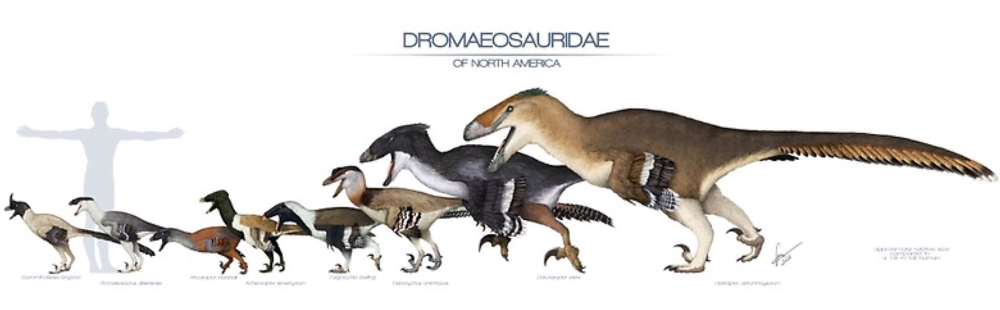

Spinosauridae
A família Spinosauridae é um grupo de dinossauros terópodes conhecidos por suas adaptações únicas para a vida semiaquática, principalmente durante o período Cretáceo. Caracterizados por seus crânios alongados e semelhantes aos dos crocodilos, esses predadores tinham dentes cônicos, ideais para agarrar peixes, o que sugere uma dieta piscívora. O mais famoso dos espinossaurídeos, o Spinosaurus aegyptiacus, tinha uma imensa "vela" nas costas formada por extensas vértebras, que pode ter ajudado na regulação da temperatura corporal ou em exibições para atrair parceiros.

Tyrannosauridae
A família Tyrannosauridae é um grupo de dinossauros terópodes carnívoros que inclui alguns dos predadores mais famosos e temidos do período Cretáceo, como o Tyrannosaurus rex. Esses dinossauros eram bípedes com fortes patas traseiras, braços pequenos e adaptados, e crânios massivos com mandíbulas poderosas, capazes de exercer uma força de mordida impressionante. Vivendo há aproximadamente 68 a 66 milhões de anos, eles ocupavam o topo da cadeia alimentar na América do Norte e na Ásia.

Dromaeosauridae
A família Dromaeosauridae inclui dinossauros terópodes ágeis e altamente adaptados para a caça, popularmente conhecidos como "raptores". Esses dinossauros, que viveram durante o período Cretáceo, são caracterizados por sua estrutura leve, longas caudas rígidas e uma garra em forma de foice no segundo dedo de cada pé, usada para capturar e segurar presas. Com membros traseiros robustos, provavelmente eram caçadores rápidos e possivelmente sociais, caçando em grupos em algumas espécies.
Spinosauridae

Os Spinosauridae são uma família de dinossauros terópodes que viveram durante o período Cretáceo, conhecidos principalmente por sua adaptação única a um estilo de vida semiaquático e dieta especializada. Seu membro mais famoso, o Spinosaurus aegyptiacus, destacava-se por sua impressionante vela dorsal, possivelmente usada para regulação térmica, exibição social, ou armazenamento de energia. Esses dinossauros, caracterizados por seus crânios longos e estreitos, semelhantes aos de crocodilos, e dentes cônicos, diferem da maioria dos terópodes carnívoros, como os tiranossaurídeos, por mostrarem adaptações para uma dieta piscívora.
Fósseis e estudos sobre os espinossaurídeos sugerem que tinham membros dianteiros bem desenvolvidos, com garras poderosas, possivelmente úteis tanto para capturar presas aquáticas quanto para se mover em ambientes aquáticos e costeiros. A estrutura de seus ossos sugere adaptações para a natação e mergulho, o que, combinado com sua morfologia dentária, indica que caçavam peixes e outros animais aquáticos. Além do Spinosaurus, outros gêneros, como Baryonyx e Suchomimus, também compartilham essas características, embora com adaptações menores para o ambiente aquático.
As pesquisas sobre os espinossaurídeos estão em constante desenvolvimento, e a compreensão de seu comportamento, fisiologia e relação com outros dinossauros continua a evoluir à medida que mais fósseis são descobertos.
Tiranosauridae

A família Tyrannosauridae é composta por alguns dos predadores mais icônicos da era dos dinossauros, incluindo o famoso Tyrannosaurus rex. Esses dinossauros terópodes dominaram os ecossistemas da América do Norte e da Ásia durante o período Cretáceo Superior. Caracterizados por suas mandíbulas extremamente robustas, dentes serrilhados e uma incrível força de mordida, os tiranossaurídeos eram caçadores altamente adaptados, provavelmente situando-se no topo da cadeia alimentar em seus habitats.
Os tiranossaurídeos possuíam crânios largos e altos, adaptados para resistir à pressão das mordidas poderosas, com um sistema de musculatura eficiente que permitia esmagar ossos para acessar a medula, uma rica fonte de nutrientes. Seus braços, embora curtos, eram musculosos e terminavam em duas garras fortes, que ainda não se sabe ao certo como eram usados, mas acredita-se que poderiam servir para segurar presas ou auxiliar na locomoção ao se erguerem do solo.
Além de sua impressionante força física, alguns estudos sugerem que os tiranossaurídeos tinham boa visão binocular e olfato apurado, habilidades úteis para um predador. Essas capacidades, junto com a evidência de que podiam alcançar altas velocidades para seu tamanho e porte, apontam para um comportamento predatório ativo, e há também evidências de que poderiam ser necrófagos, aproveitando-se de restos de animais mortos para se alimentar.
Entre os membros da família, além do T. rex, destacam-se gêneros como o Albertosaurus e o Daspletosaurus, que eram um pouco menores, mas ainda assim mortais em seus ecossistemas.
Tiranossauro Rex

A primeira espécie dos Tyrannosauridae que vamos entrar em detalhes não poderia ser diferente, aquele conhecido como o Rei dos Dinossauros: Tiranossauro Rex. Sem dúvidas o dinossauro mais famoso de todos os tempos, os T. Rex (como conhecidos) viveram entre 66 e 68 milhões de anos atrás, no final do período Cretáceo. Desde sua descoberta a aparência real de um Tiranossauro era uma icógnita, no passado era retratado quase como um monstro, principalmente pelo cinema das eras antigas. Mas devemos lembrar de que essa criatura era um animal como qualquer outro. Apresento-lhes Sue, o esqueleto de Tiranossauro mais completo já achado até hoje.

O T. Rex era um carnívoro com a massa de um elefante africano e a quantidade de musculo necessária para manter essa criatura em pé era imensa, ocasionando em um corpo robusto e musculoso, completamente diferente das representações dos Tiranossauros que os colocavam como criaturas magras. Logo abaixo está uma representação de como pode ter sido a Sue em vida.

A polêmica acerca dos filhos dos Tiranossauros
O Tyrannosaurus rex foi uma espécie muito abundante durante sua existência; estudos indicam que aproximadamente 2,5 bilhões de indivíduos dessa espécie existiram ao longo do tempo. No entanto, por anos, os cientistas ficaram perplexos ao tentar encontrar fósseis de indivíduos juvenis. Afinal, como uma espécie tão abundante não deixaria registros de sua juventude? Uma teoria científica busca responder essa questão: uma espécie chamada Nanotyrannus, com características diferentes das de um T. rex adulto, como focinho estreito, pernas mais longas e dentes mais finos, poderia, na verdade, representar T. rex jovens. Curiosamente, até hoje, nenhum exemplar conhecido de Nanotyrannus parece ter alcançado a fase adulta.

Comparação entre um Nanotyrannus e um Tyrannosaurus rex
Por serem tão distintos dos adultos, os jovens T. rex podem ter ocupado um nicho ecológico diferente. Essa hipótese, conhecida como "transição ontogenética de nicho", sugere que durante a juventude o T. rex adotava um tipo de estratégia de caça diferente dos adultos, possivelmente para evitar competição por recursos entre indivíduos de idades variadas. Essa adaptação teria ajudado a garantir a abundância da espécie ao longo de sua existência. Vale lembrar de que isso está em debate por anos na comunidade científica e nem todos os pesquisadores concordam com tal teoria, afinal, estudos recentes mostram que talvez os Nanotyrannus tenham sido uma espécie de tiranossaurídeo separada dos T. Rex
Nanotirano

O Nanotyrannus, cujo nome significa "pequeno tirano", é um assunto de grande debate na paleontologia. Ele viveu no fim do período Cretáceo, há aproximadamente 68 milhões de anos. Esse pequeno tiranossaurídeo foi descrito inicialmente como uma espécie distinta, mas muitos cientistas sugerem que Nanotyrannus pode, na verdade, representar um estágio juvenil do Tyrannosaurus rex. O primeiro registro fóssil de um Nanotyrannus, foi de seu crânio, encontrado em 1942 pelo paleontólogo americano David H Dunkle, em Montana

Nanotyrannus, seja ele um T. rex juvenil ou uma espécie válida, viveu na região oeste da América do Norte, contemporâneo ao T. rex. Naquela época, grande parte dessa área era coberta por um mar interior raso, com as montanhas rochosas elevando-se no extremo oeste. O clima tendia a ser quente e úmido durante o ano todo. A vegetação era dominada por florestas de carvalhos, bétulas, coníferas e magnólias, além de pântanos costeiros repletos de samambaias, ciprestes e árvores semelhantes a sequóias. A fauna incluía muitos animais que reconheceríamos hoje, como pássaros, insetos, serpentes, crocodilos, anfíbios e pequenos mamíferos, juntamente com dinossauros herbívoros como o Triceratops, hadrossauros e anquilossauros.

Nanotyrannus, como outros tiranossauros, era um predador, com dentes serrilhados que eram ótimos para fatiar e comer carne. Eles tinham visão estereoscópica, como a maioria dos predadores, e provavelmente eram muito ágeis. Assim como muitos outros dinossauros, é difícil especular com precisão como foi a aparência de um nanotyrannus, os registros fósseis não são tão completos, deixando a comunidade científica com dúvida acerca de sua real imagem.
Albertossauro

Albertosaurus (significa "lagarto de alberta") foi um grande tiranossauro do Cretáceo Superior do oeste da América do Norte. Este dinossauro feroz e carnívoro era mais baixo e mais leve que o Tyrannosaurus rex e pertence a uma subfamília diferente, Albertosaurinae, junto com o Gorgosaurus.

O esqueleto do Albertosaurus – como o de outros albertosaurinos – difere do de tiranossauros como o T. rex por seu crânio mais curto e inferior, ossos do quadril mais curtos (ílios) e ossos dos membros posteriores inferiores proporcionalmente mais longos (tíbias, metatarsos e ossos dos dedos dos pés). Como outros tiranossauros, ele andava sobre duas pernas poderosas e tinha uma cabeça grande - seu crânio crescia até cerca de um metro de comprimento. Ele tinha mãos com dois dedos em braços curtos e uma cauda longa que fornecia equilíbrio e a capacidade de virar rapidamente. A mandíbula inferior do Albertosaurus tinha 14-16 dentes; a mandíbula superior tinha 17-19 dentes. O Albertosaurus também tinha uma crista óssea curta e distinta acima dos olhos que pode ter sido colorida e usada para atrair uma parceira.

O Albertosaurus era um predador com dentes afiados, tipicamente serrilhados em uma borda para auxiliar no corte de carne e ossos, utilizando uma ação de "agarrar e rasgar". Seu porte moderado, aliado ao ambiente menos denso em vegetação, sugere que poderia caçar tanto emboscando quanto perseguindo presas em longas corridas, atingindo velocidades de até 30 km/h. Além disso, sua cauda lhe proporcionava agilidade, ajudando-o a mudar de direção em alta velocidade. Estudos indicam que Albertosaurus poderia atacar presas de tamanho similar ou maior com uma técnica de "mordida e corte", em vez de uma matança rápida. Essa estratégia poderia ter sido útil ao caçar grandes saurópodes. Evidências fósseis, incluindo a descoberta de mais de 20 espécimes juntos, apontam para a possibilidade de que caçava em grupo.
Dromaeosauridae

A família Dromaeosauridae, frequentemente referida como "raptores", inclui dinossauros ágeis, carnívoros e predadores, conhecidos por suas garras curvas e afiadas nos pés e por serem altamente inteligentes para os padrões dos dinossauros. Com membros como o Velociraptor, Deinonychus e Utahraptor, os dromeossaurídeos viveram predominantemente durante o período Cretáceo, habitando áreas que atualmente fazem parte da Ásia, Europa e América do Norte.
Esses dinossauros possuíam corpos esbeltos e musculosos, com caudas longas e rígidas que ajudavam no equilíbrio e nas manobras rápidas durante a caça. Suas pernas eram adaptadas para corridas ágeis, permitindo perseguições em alta velocidade, enquanto a garra curva em forma de foice no segundo dedo de cada pé era uma ferramenta mortal para capturar e dilacerar suas presas. Essa garra podia ser mantida retraída para não desgastar-se durante a movimentação e, em momentos de ataque, era usada para perfurar ou rasgar a pele de outros animais.
Muitos dromeossaurídeos também apresentavam penas, e há evidências que sugerem que algumas dessas espécies estavam evolutivamente próximas das primeiras aves. Embora incapazes de voar, essas penas poderiam ter funções como isolamento térmico, exibições sociais ou até auxiliar na aerodinâmica, proporcionando estabilidade e controle em saltos.
O cérebro relativamente grande em comparação a outros dinossauros indica que os dromeossaurídeos provavelmente possuíam um comportamento social complexo e habilidades cognitivas mais avançadas, podendo até caçar em grupos para aumentar o sucesso em capturar presas maiores. Essa combinação de inteligência, agilidade e um conjunto de adaptações físicas afiadas tornava os dromeossaurídeos alguns dos predadores mais formidáveis da era dos dinossauros.